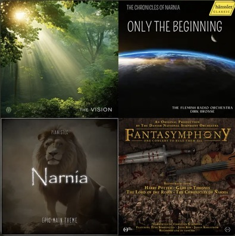
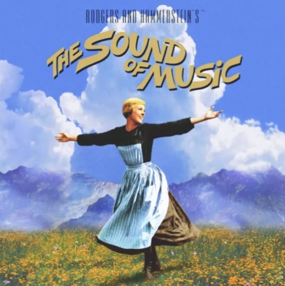

Your Top Songs 2025 Isaiah
The Vision The Vision 12:32
The chronicles of Narnia Only the beginning 4:11
Narnia (Epic Main Theme) Narnia (Epic Main Theme) 4:30
A Narnian Lullaby & Coronation (From "The Chronicles of Narnia") Fantasymphony 7:40
Lord, I Need You Lord, I Need You [Performance Tracks] 4:11
The Prayer (aus "The Voice of Germany 2023")-Live The Prayer (aus "The Voice of Germany 2023")-Live 2:50

The Sound of Music Original Soundtrack
Prelude/The Sound of Music 2:44
Overture/Preludium (Dixit Dominus) 4:11
Morning Hymn/Alleluia 2:01
Maria 3:16
I Have Confidence 3:25
Instrumental Hymns & Piano Worship Tim DappyTkeys Oladeru
Draw Me Nearer Piano Worship, Vol.1 1:51
Amazing Grace Piano Hymns 3:25
Now Thank We all Our God Piano Worship, Vol.1 3:53
Blessed Assurance Piano Hymns 5:09
O For a Thousand Tongues Piano Worship, Vol.1 3:23